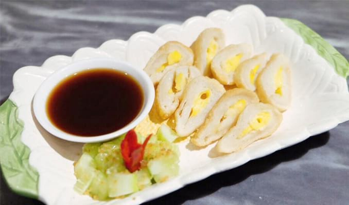

Oleh Oleh Khas Indonesia
Oleh-oleh Terbentang dari Sabang hingga Merauke, Indonesia menyimpan segudang keunikan yang tidak ada habisnya untuk dieksplorasi. Keunikan inilah yang menjadi daya tarik bagi para wisatawan mancanegara untuk datang berkunjung. Seakan sudah menjadi satu identitas suatu daerah yang dikunjungi oleh wisatawan. Belum lengkap rasanya, jika bepergian jika tak membawa buah tangan. Apalagi menurut Presiden Akademi Gastronomi Indonesia (AGI), Vita Datau, oleh-oleh khas yang dimiliki suatu daerah, punya daya tarik tersendiri bagi banyak turis, baik dalam maupun luar negeri. "Setiap kreasi oleh-oleh, biasanya memiliki sebuah cerita yang menarik dan khas sebagai nilai jual. Apalagi, jika oleh-oleh tersebut mengangkat unsur lokal dan budaya suatu daerah," ujar dia dalam acara Blue Band Master Oleh-oleh 2017 di Jakarta, Kamis (14/12/2017). Disini saya lampirkan serba sedikit nama oleh oleh khas beberapa daerah di Indonesia, sehingga anda tidak lagi mencari cari oleh oleh khas apa dari satu daerah tersebut jika anda mengunjungi daerah tersebut.
1. Almond Crispy Cheese, Surabaya
Almond Crispy Cheese adalah salah satu camilan khas Surabaya yang paling banyak digemari saat ini. Cemilan khas surabaya ini memang beda dari makan khas daerah pada umumnya. Selain rasanya yang benar benar enak dan kress namun dikemas cukup mewah. Almond Crispy Cheese ini bertekstur sangat tipis, lembut dan kriuk di mulut. Oleh-oleh ini mempunyai 6 varian rasa, seperti original, coklat, green tea, durian, blueberry dan strawberry.
2. Bakpia, Yogyakarta
Selain sebagai kota gudeg, Yogyakarta juga punya makanan yang bisa jadi oleh-oleh yaitu Bakpia. Kamu bisa mendapatkan rasa original bakpia dengan rasa kacang hijau. Tetapi sekarang bakpia sudah punya beraneka variasi rasa yang bisa kamu pilih.
3. Bika Ambon, Medan
Lucu ya kalau dengar Bika Ambon dari Medan? Tetapi memang Bika Ambon ini oleh-oleh khas Sumatra Utara terutama Medan. Selain rasa original, Bika Ambon juga punya banyak aneka rasa lainnya seperti rasa keju dan durian.
4. Kue Sagu, Papua
Namanya saja Kue Sagu dan pastinya kue ini dibuat dari bahan sagu. Kue ini memang bentuknya keras tetapi rasa olahan sagu yang khas akan terasa enak di mulut. Apalagi jika kue sagu tersebut dicelupkan ke minuman kopi atau minuman yang kamu sukai.
5. Lumpia, Semarang
Kalau ingat semarang, pasti ingat untuk beli Lumpia ya! Lumpia asli Semarang memang khas dan rasanya nendang banget. Isinya bambu muda yang diolah dan dibalut dengan kulit lumpia lalu digoreng. Lumpia ini bisa kamu beli dalam keadaan yang belum digoreng.
6. Pempek, Palembang
Pempek memang banyak terdapat di luar Kota Palembang, tetapi gak ada salahnya juga beli Pempek asli dari tempatnya kalau sedang berkunjung. Pasti lebih berkesan kalau berkunjung ke Kota Pempek ini dan membeli makanan khasnya ya.
7. Serabi Solo, Solo
Ini makanan di Solo yang harus kamu beli karena rasanya enak banget. Selain teksturnya yang lembut, Serabi Solo ini punya rasa yang khas dan kamu bisa membelinya untuk partai besar dengan kotak yang mudah dibawa. Jadi kamu bisa bagi-bagi ke saudara dan teman-temanmu nanti.
8. Lapis, Surabaya
Pengaruh masa kolonial Belanda berpengaruh di Kota Surabaya seperti kulinernya. Lapis Surabaya adalah oleh-oleh yang bisa kamu beli saat berkunjung ke Surabaya. Resep dari kue Lapis ini sudah turun temurun dari jaman penjajahan Belanda. Itulah yang membuat Lapis Surabaya menjadi unik.
9. Keripik Apel, Malang
Aneka keripik banyak terdapat di Kota Malang, dan di antaranya yang paling terkenal adalah Kripik Buah Apel. Banyaknya pohon apel di Kota Malang, membuat malang terkenal dengan hasil olahan-olahan apel salah satunya kripik apel.
10. Pie Susu, Bali
Camilan bulat pipih ini merupakan salah satu oleh-oleh khas Bali yang banyak diburu wisatawan. Perpaduan legitnya vla susu di bagian tengahnya dengan kulit pinggiran yang renyah benar-benar bikin ketagihan. Jika kamu ke Bali, ada banyak merek pie susu di Bali.
11. Dodol Rumput Laut, Lombok
Uniknya oleh-oleh dari Lombok ini yaitu Dodol Rumput Laut. Bentuknya seperti jeli dan berwarna-warni. Rasanya enak karena tidak terlalu manis dan cocok untuk oleh-oleh buat orang-orang dirumah atau teman-teman kamu.
12. Keripik Pisang, Lampung
Buah pisang memang sudah biasa dijadikan salah satu bahan untuk membuat keripik. Namun salah satu keripik pisang paling populer adalah keripik pisang khas Lampung. Uniknya keripik pisang ini dibanding keripik pisang lainnya adalah terdapat banyak pilihan rasa yang bisa kamu cicipi! Mulai dari cokelat, keju, susu, melon, stroberi, dan lain-lain. Nggak heran keripik satu ini jadi oleh-oleh wajib jika berkunjung ke Lampung
13. Kue Kurma, Makassar
Kue ini sebenarnya gak terbuat dari kurma. Jadi, tidak ada kandungan bahan kurma di dalamnya. Kue ini dibalut oleh lapisan karamel yang membuat bentuk kue ini terlihat seperti kurma. Enaknya kue ini karena campuran rasa manis dari karamel dan gurih dari kacangnya.
14. Amplang, Kalimantan
Kerupuk Amplang terbuat dari ikan pipih yang hidup di sungai-sungai Kalimantan. Itulah kenapa Amplang cocok untuk jadi oleh-oleh buat keluarga atau teman-teman yang jauh dari Kalimantan. Amplang ini adalah kerupuk khas dari Kalimantan. Sekarang kamu sudah tahu apa yang harus kamu beli kalau kamu berkunjung ke salah satu kota diatas. Jadi, kamu gak boleh bingung lagi dan sudah ada bayangan. Pastikan oleh-olehnya cukup dan merata untuk orang-orang yang ingin kamu belikan ya.
15. Kopi Aceh, Aceh

Pasti sudah banyak yang mendengar kopi Aceh yang memang sudah terkenal hingga ke penjuru dunia. Di sana telah muncul berbagai merek kopi namun kebanyakan adalah jenis kopi Arabica dan Robusta karena kedua jenis itu sangat mudah tumbuh di kawasan Aceh. Kelebihan kopi dari daerah ini memiliki rasa yang kuat dan punya aroma yang nikmat serta cita rasa yang berbeda dari kopi-kopi lain. Untuk jenis kopi Robusta ada salah satu kopi yang sangat digemari oleh masyarakat asli maupun para pelancong, yaitu kopi Ulee Kareng yang menggunakan 100 persen biji kopi asli. Proses pembuatannya dilakukan dengan sangat hati-hati sehingga menimbulkan rasa yang khas dan kualitas tetap terjamin sampai masuk ke kerongkongan.
16. Pisang Sale, Aceh
Sale pisang tidak hanya dijumpai di Aceh saja, melainkan di beberapa kawasan Indonesia, banyak yang memiliki olahan sale. Namun yang membedakannya dengan sale asal Aceh adalah cara pemasakan yang berbeda. Cara membuatnya adalah dengan terlebih dahulu mengupas pisang matang dari kulitnya lalu dijemur sampai garing. Jika sudah, pisang akan diasapi terlebih dahulu baru kemudian dilumuri gula tebu. Sebenarnya sampai disini sudah bisa dimakan, namun bisa juga digoreng kembali menggunakan tepung agar lebih renyah.
17. Kopi Luwak, Indonesia
Kopi yang terkenal didunia karena kenikmatannya. Kopi luwak berasal dari sisa kotoran musang, dan kopi luwak Indonesia yang paling diminati. Dari sejarah kopi luwak (en=civet coffee) adalah sisa kotoran musang atau sering disebut kopi luwak, (sumber para petani kopi). Luwak adalah sejenis musang dengan nama latin “Paradoxurus hermaphroditus” merupakan hewan yang sangat umum di Indonesia, meski tak jarang menjadi tersangka hilangnya ayam di perkampungan penduduk, namun sebenarnya makanan kegemaran utamanya adalah buah-buahan. Mungkin beberapa orang merasa penasaran, kenapa kopi yang berasal dari kotoran luwak ini memiliki kenikmatan luar biasa. Luwak memang hewan yang sangat menyukai berbagai macam buah-buahan. Kopi adalah salah satu makanan yang disukainya. Dengan indra penciuman yang sangat peka, dia akan benar-benar menyeleksi makanan yang masuk ke dalam tubuhnya. Hanya kopi yang benar-benar matang yang akan disantapnya. Namun biji kopi yang keras tidak akan bisa dicerna oleh tubuhnya sehingga keluar lagi dalam kondisi utuh. Selain itu, petani kopi percaya bahwa biji kopi yang keluar bersama kotoran itu telah melalui fermentasi alami di dalam pencernaan luwak.
18. Topeng, Indonesia
Topeng telah ada di Indonesia sejak zaman prasejarah. Secara luas digunakan dalam tari topeng yang menjadi bagian dari upacara adat atau penceritaan kembali cerita-cerita kuno dari para leluhur. Diyakini bahwa topeng berkaitan erat dengan roh-roh leluhur yang dianggap sebagai interpretasi dewa-dewa. Pada beberapa suku, topeng masih menghiasi berbagai kegiatan seni dan adat sehari-hari. Beberapa topeng di Indonesia pun digunakan sebagai hiasan di dalam rumah atau di luar rumah. Ada beberapa orang mengatakan Topeng Bali dan Malangan sangat unik karena masing-masing menunjukkan ekpresi wajah yang berbeda-beda.
19. Kain Batik, Indonesia
Membicarakan batik pasti membuat semua orang teringat dengan Indonesia. Pada tanggal 2 Oktober 2009, UNESCO sudah menetapkan batik sebagai warisan kemanusiaan untuk budaya lisan dan nonbendawi. Itulah sebabnya tanggal 2 Oktober setiap tahun ditetapkan sebagai hari batik nasional. Batik berasal dari Bahasa Jawa, yaitu amba yang berarti menulis dan nitik yang berarti titik. Setiap motif batik tulis memang diawali dengan membuat pola berupa titik-titik. Walaupun diawali dengan pola yang mirip, kini variasi motif batik di tanah air sangat beragam. Penggunaan batik sekarang tak lagi identik dengan kesan kuno. Justru masyarakat modern semakin mahir memadukan batik agar kelihatan elegan dan berkelas.
20. Rokok Kretek, Indonesia
Rokok kretek adalah rokok yang menggunakan tembakau asli yang dikeringkan, dipadukan dengan saus cengkeh dan saat dihisap terdengar bunyi kretek-kretek. Rokok kretek berbeda dengan rokok yang menggunakan tembakau buatan. Jenis cerutu merupakan simbol rokok kretek yang luar biasa, semuanya alami tanpa ada campuran apapun, dan pembuatannya tidak bisa menggunakan mesin. Masih memanfaatkan tangan pengrajin. Ulasan tentang sejarah rokok kretek di Indonesia bermula dari kota Kudus. Rokok kretek memang masih mendominasi pasar tembakau di Indonesia. Pada tahun 2007, 92% dari perokok lebih memilih rokok kretek ketimbang cigarettes atau rokok putih. Produsen lokal konvensional secara tradisional menguasai pasar rokok kretek.
21. Kerajinan Tangan, Indonesia

Kerajinan Tangan adalah suatu produk yang diciptakan dengan menggunakan tangan sehingga memiliki nilai jual. Kerajinan tangan merupakan karya seni yang lebih mengutamakan keterampilan tangan sebagai pembuat karya seni. Semakin tinggi kualitas kerajinan tangan yang dibuat maka semakin mahal harga dari kerajinan yang dibuat tersebut. Di Indonesia sendiri sudah banyak kerajinan tangan yang terkenal bahkan mendunia. Setiap daerah di Indonesia memiliki keindahan tersendiri yang memperlihatkan kebudayaan masing-masing daerah. Karena itu, banyak sekali kerajinan tangan yang berasal dari Indonesia.
22. Intip Goreng
Intip adalah makanan sisa, karena intip itu adalah kerak nasi. Jika kita menanak nasi menggunakan kendil atau periuk. Otomatis, kita sekaligus menghasilkan intip. Intip itu ada yang tebal dan tipis. Tergantung cara menanak nasi dan lamanya. Tetapi, ini terjadi hanya di kendhil atau Periuk.
23. Yangko
Yangko adalah makanan khas kota Yogyakarta yang terbuat dari tepung ketan. Yangko berbentuk kotak dengan baluran terigu, kenyal dan rasanya manis. Pada rasa aslinya, Yangko berisi campuran cincangan kacang dan gula, seperti kue moci asal Jepang. Hanya bedanya, moci lebih lembek dan lebih kenyal dibandingkan yangko. Selain rasa aslinya, kini yangko juga memiliki rasa buah-buahan, seperti strawberry, durian, dan melon. Yangko banyak ditemui di daerah Kotagede, Yogyakarta.
24. Angklung
Angklung adalah alat musik yang secara tradisional berkembang dalam masyarakat Sunda. Alat musik ini dibuat dari bambu, dibunyikan dengan cara digoyangkan sehingga menghasilkan bunyi yang bergetar dalam susunan nada 2, 3, sampai 4 nada dalam setiap ukuran, baik besar maupun kecil.
25. Kain Songket Palembang
Keberadaan kain songket Palembang merupakan salah satu bukti peninggalan kerajaan Sriwijaya yang mampu menguasai perdagangan di Selat Malaka pada zamannya. Jenis madu murni, lebah yang tidak diternak atau dengan kata lain berasal dari lebah liar yang ditemukan di hutan-hutan Sumbawa.
26. Mutiara Lombok
Lombok dan mutiara bagaikan dua kata yang tidak terpisahkan. Identitas yang sudah melekat erat dengan Pulau Lombok. Ke Lombok belum sah bila belum membawa oleh-oleh mutiara. Lombok tidak hanya kaya dengan keindahan alam, pantai, dan kerajinan tangan khas lainnya. Lombok juga terkenal dengan mutiaranya. Terdapat beragam tempat penjualan perhiasan mutiara di Pulau Lombok, mulai dari yang kelas galery hingga yang kelas kaki lima. Bahkan di depan hotel-hotel baik di pusat Kota Mataram maupun di hotel/resort sepanjang Pantai Senggigi pun banyak yang menjual bermacam perhiasan mutiara. Lombok memang terkenal dengan budidaya mutiaranya, baik air tawar maupun mutiara air laut. Mutiara memang salah satu perhiasan kelas atas yang konon katanya juga sering dikenakan oleh bangsawan romawi ketika menghadiri perjamuan orang-orang terpandang di negara itu. Chleopatra yang merupakan icon kecantikan wanita dijamannya kabarnya juga doyan dengan jenis perhiasan ini.